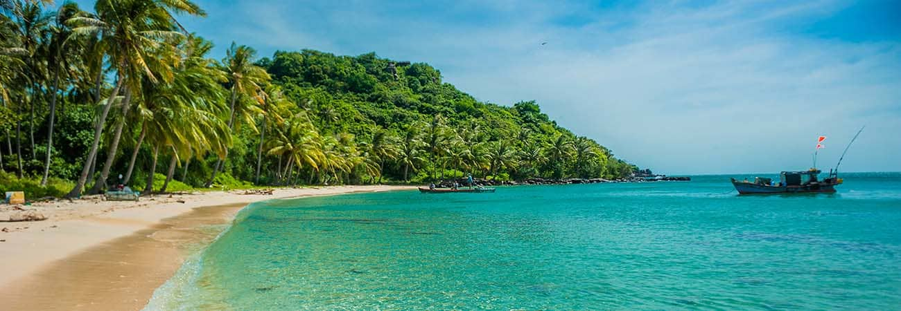
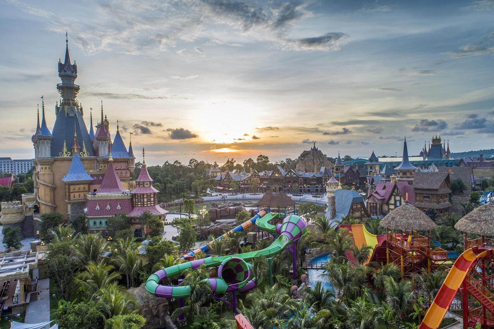
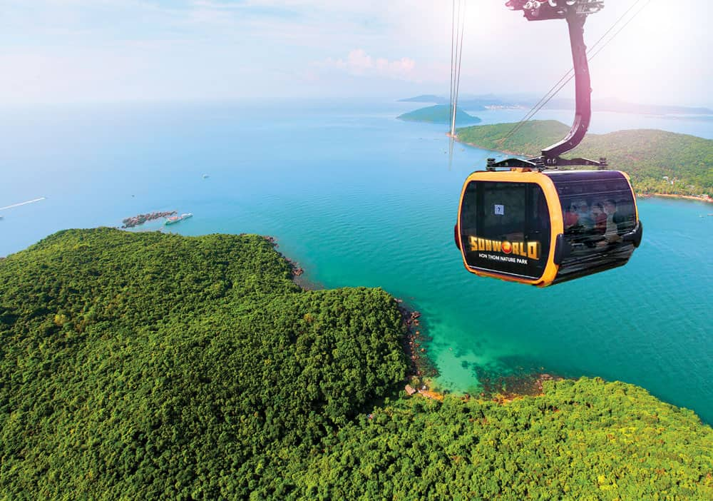
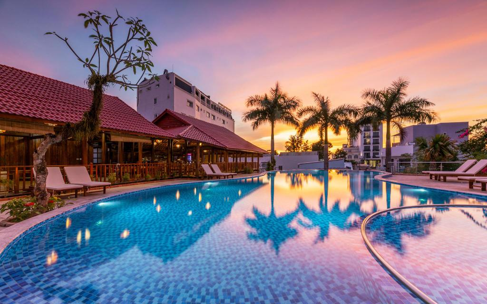
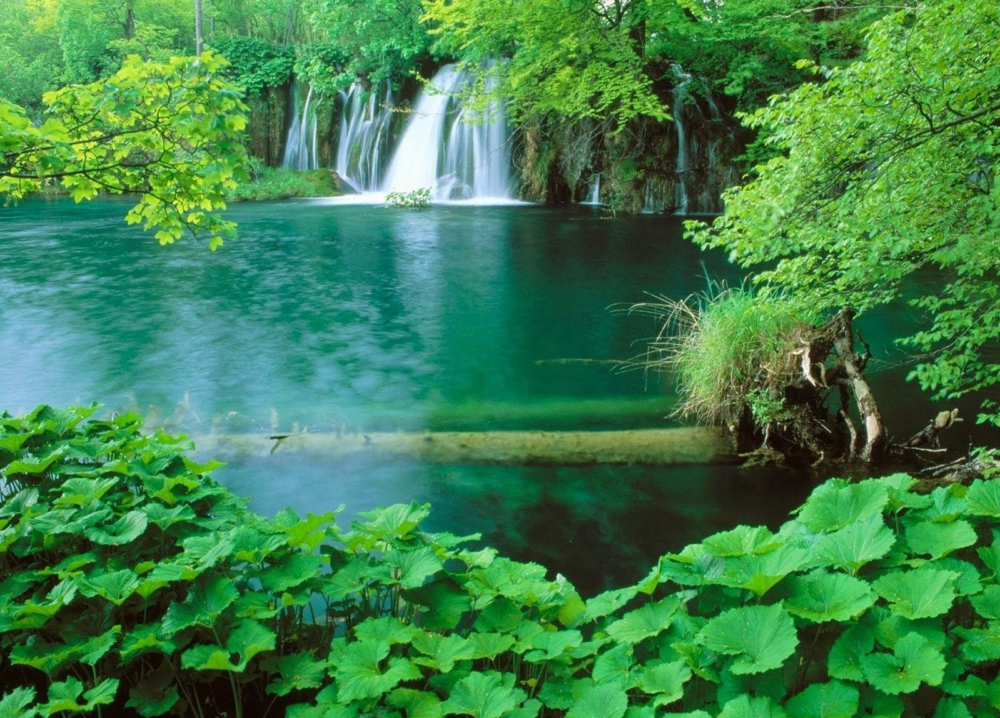

Phú Quốc - Viên ngọc xanh ở cuối dải đất chữ S
Được thiên nhiên ban tặng những khung cảnh đẹp say lòng người mà ngỡ rằng chỉ có thể có trên thiên đường, từ lâu ngành du lịch Phú Quốc đã hình thành và phát triển không ngừng. Để đảm bảo du khách có thể thoải mái nhất khi ghé thăm Phú Quốc, các dịch vụ du lịch Phú Quốc ngày càng đa dạng và nâng cao về chất lượng. Hãy để chúng tôi giúp bạn có được cái nhìn rõ nét về các trải nghiệm phù hợp với bản thân mình trong chuyến hành trình khám phá Phú Quốc.
Vinpearl Land Phú Quốc
Có diện tích lên đến 300 hecta, nằm ở phía Bắc Đảo Phú Quốc, ngay tại Bãi Dài. Đây là một hệ thống kết hợp giữa khu vui chơi giải trí với khu nghỉ dưỡng cao cấp đạt 5 sao được thiết kế sang trọng, cao cấp và hiện đại. Khi đến đây bạn không chỉ được vui chơi với những trò chơi hấp dẫn, mà còn có những ngày nghỉ dưỡng tuyệt vời.


Lặn biển Phú Quốc
Tạo hóa đã khoản đãi cho Phú Quốc một thế giới thủy sinh phong phú và kỳ diệu, tạo nên “bức tranh thủy mặc” sinh động dưới lòng đại dương. Nắm bắt vẻ đẹp trời ban ấy, dịch vụ lặn biển Phú Quốc ra đời nhằm phục vụ du khách tham quan khám phá hệ sinh thái đa dạng, trù phú dưới đáy biển.
Cáp treo Hòn Thơm
Có chiều dài lên đến 7.899,9m. Đây là chiều dài lớn nhất được xác lập về tuyến Cáp Treo 3 dây vượt biển trên thế giới. Cáp treo Hòn Thơm sẽ đưa du khách đến với một hành trình du ngoạn kỳ thú trên cao, để thu vào tầm mắt 360 độ vẻ đẹp Nam Phú Quốc.


Resoft Vinpearl Phú Quốc
Vinpearl Resort & Spa Phú Quốc mang trong mình kiến trúc Á Đông độc đáo với thiết kế mái ngói đỏ nổi bật giữa quần thể Vinpearl Phú Quốc. Khu nghỉ dưỡng với 2 tòa với hơn 600 phòng khách sạn, 20 căn biệt thự và các chòi spa bên hồ.
Vườn quốc gia Phú Quốc
Tổng diện tích lên đến 31.422 hécta, Vườn quốc gia Phú Quốc là nơi hội tụ cả rừng, biển, suối, thác, và đồi núi. Thảm thực vật nguyên sinh và rừng nhiệt đới là nơi cư trú của khoảng hàng trăm loài chim, thú, có những loài quý hiếm với nguy cơ tuyệt chủng cao.
